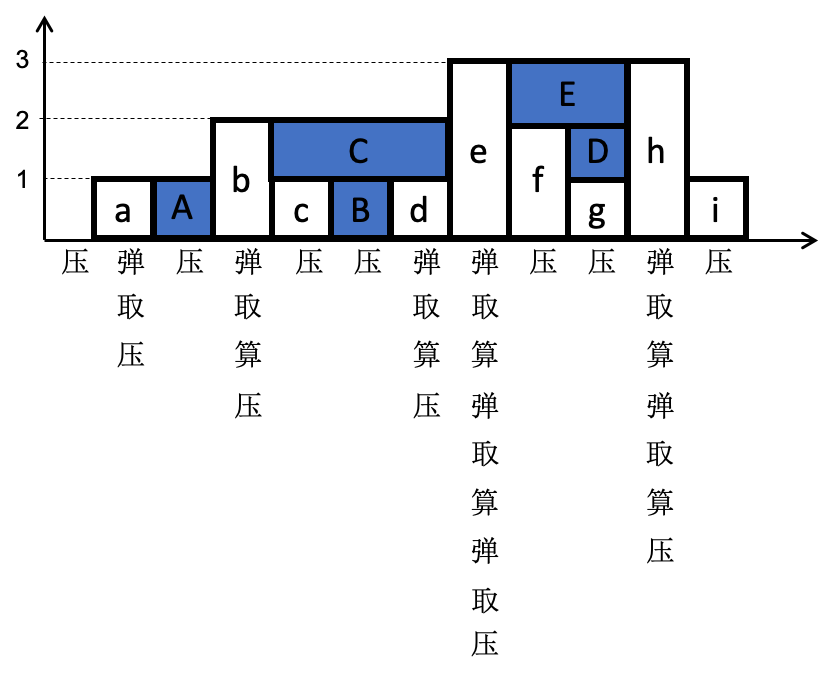

一、什么是单调栈
单调栈是指栈中的数据按递增/递减顺序存放。故单调栈通常分为单调递增栈和单调递减栈。
单调递增栈： 栈中元素按递增顺序存放，通常用于求解数组中比当前元素小的下一个/前一个元素。
单调递减栈： 栈中元素按递减顺序存放，通常用于求解数组中比当前元素大的下一个/前一个元素。
二、单调栈的应用
单调栈通常应用在数组中，应用中对于数组中每个元素，核心步骤为(以单调递减栈为例)：
- 栈非空，当前元素比栈顶大，弹出栈顶元素，开始处理数据。一直弹栈处理，直到栈空，或者比栈顶小。
- 压栈 (满足单调递减特性)
[leetcode-739] 每日温度
根据每日气温列表，请重新生成一个列表，对应位置的输入是你需要再等待多久温度才会升高超过该日的天数。如果之后都不会升高，请在该位置用 0 来代替。如：
输入：[73, 74, 75, 71, 69, 72, 76, 73]
输出：[1, 1, 4, 2, 1, 1, 0, 0]
提示：气温列表长度的范围是 [1, 30000]。气温的值均为华氏度，都是在 [30, 100] 范围内的整数。
如果采用直接求解，则对每个温度，遍历其后的每个元素，判断是否超过该日温度。这样求解的时间复杂度为O(n^2)。
这个题目是典型的单调栈的应用，可以在O(n)时间复杂度内求解，不过对应的需要O(n)的空间复杂度。可以采用单调递减栈，对于每日温度，核心步骤为：
- 栈非空，该日温度比栈顶对应温度大，找到超过栈顶对应温度的第一个温度，弹栈，处理数据。一直弹栈处理，直到栈空，或者该日温度比栈顶对应温度小。
- 压栈 (栈中温度单调递减，都还没找到比自身大的温度)
/* Note: The returned array must be malloced, assume caller calls free(). */
int *dailyTemperatures(int *T, int TSize, int *returnSize)
{
int *days = calloc(1, sizeof(int) * TSize);
int i = 0;
struct stack s;
int top_day = 0;
stack_init(&s);
for (i = 0; i < TSize; i++) {
/* current element > top, just pop until current element < top */
while ((!stack_empty(&s)) && (T[i] > T[touch_pop(&s)])) {
top_day = pop(&s);
days[top_day] = i - top_day;
}
/* push, keep decrease stack */
push(&s, i);
}
while (!stack_empty(&s)) {
days[pop(&s)] = 0;
}
*returnSize = TSize;
return days;
}
[leetcode-42]接雨水
给定 n 个非负整数表示每个宽度为 1 的柱子的高度图，计算按此排列的柱子，下雨之后能接多少雨水。

上面是由数组 [0,1,0,2,1,0,1,3,2,1,3,1] 表示的高度图，在这种情况下，可以接8个单位的雨水（蓝色部分表示雨水），如：
输入: [0,1,0,2,1,0,1,3,2,1,3,1]
输出: 8
这个题目也是用单调递减栈来求解，这里为了计算面积的方便，栈中保存的是对应柱子的下标。

可以先只考虑只有一个接雨水的地方，如图中的b->c->d->e之间，那么，从b开始，对于递减的数压栈，则c和B对应的下标相继压栈。接着，碰到比栈顶大的数d，就出现了积水的地方B。此时积水的高度是c和d的低者和栈顶B对应数的差值，而宽度就是d和B下标的差值。因此，我们会弹出栈顶B对应的数，然后去计算积水B，然后d压栈。接着继续e的一系列动作。
对于题目中给出的例子，在图中给出了完整的 { 弹(栈)/取(栈顶值)/算/压(栈) } 四个步骤的的过程。
int trap(int *height, int heightSize)
{
int i = 0;
struct stack s;
int area = 0;
int bottom = 0;
int top = 0;
int idx_prev = 0;
/* decrease stack */
stack_init(&s);
for (i = 0; i < heightSize; i++) {
while ((!stack_empty(&s)) && (height[i] > height[touch_pop(&s)])) {
/* pop */
bottom = height[pop(&s)];
if (!stack_empty(&s)) {
/* touch top of stack */
idx_prev = touch_pop(&s);
top = height[i] < height[idx_prev] ? height[i] : height[idx_prev];
/* calc */
area += ((top - bottom) * (i - idx_prev - 1));
}
}
/* push */
push(&s, i);
}
return area;
}
三、总结
单调递减栈： 碰到比栈顶小，压栈；碰到比栈顶大的，弹栈处理。
单调递增栈： 碰到比栈顶大，压栈；碰到比栈顶小的，弹栈处理。
压栈的元素，可能直接是当前处理的数，也可能是下标。
基本上可以用如下框架来完成单调栈(单调递减栈为例)：
for (i = 0; i < len; i++) {
while (!stack_empty && (nums[i] > top_of_stack) {
pop();
...
}
push();
}
一般单调栈的应用需要一定的转换，如[leetcode-1124]表现良好的最长时间段，就是通过转换成前缀和数组后，最后求解前缀和数组的最长上坡。